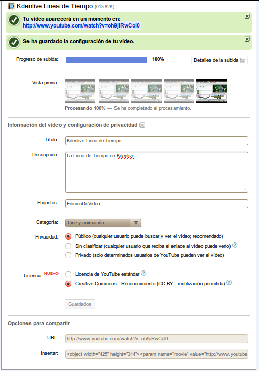

Video por Internet (Online)
Ahora que sabemos cómo crear videos
de alta calidad, necesitamos una manera de distribuirlos. Los DVDs son
buenos, pero están pasando de moda. En el mundo actual, el método
principal de distribución de video es el Internet. El rey de este campo
es YouTube, pero hay otros sitios web disponibles (tanto gratis como
sitios más profesionales por los que hay que pagar).
YouTube puede tomar casi cualquier tipo de video (usan FFMpeg tras
bastidores) y mostrarlo en una página web. Además de proveerlo a la
resolución a la que lo envías, YouTube también crea copias más pequeñas
para que personas con conecciones de internet más lentas (o pantallas
más pequeñas) puedan ver los videos también. El mayor límite de YouTube
es que solamente soporta videos de 15 minutos o menos de duración.
Necesitas registrarte en YouTube para poder subir videos (puedes
registarte a través del botón en la parte superior de la página
principal). Una vez tengas una cuenta de usuario, haz clic en el botón
de "Subir" en el homepage. Luego puedes seleccionar el archivo que
quieres subir. Cuando ti video termine de subir, puedes tomar un minuto
para completar detalles del video, como: Título, Descripción,
Etiquetas, Categoría, y Opciones de privacidad.

El
título debe ser corto, usualmente solo un par de palabras. La
descripción debe ser más large y describir de qué trata tu video. Las
etiquetas pueden ser varias palabras que se pueden usar para buscar tu
video. Si no estás seguro qué poner aquí, puedes ver otros videos
similares al tuyo en YouTube y usar etiquetas similares a las de esos
videos. La selección de Categoría es simplemente seleccionar la mejor
opción dentro de la lista que te provee el menú. Finalmente, puedes
permitir que tu video sea público para que cualquier persona en el
mundo lo pueda ver, o una de las otras opciones. Eso es todo! Ahora tu
video está disponible en vivo para que el mundo lo vea en YouTube.
Hay otros sitios web libres de costo que trabajan de forma similar a YouTube: blip.tv, vimeo,
revver, metacafe, flickr, y hasta commons.wikimedia.com.
Además de esos sitios, hay otros sitios profesionales con acceso
pagado. Finalmente, hay muchos servicios, gratis y pagados, que te
permiten insertar tu video en cualquier página de internet,
permitiéndote tener tu propio video en una página web que tú hayas
creado.
Todas las opciones que hemos discutido hasta ahora son tipos de
descarga progresiva de video. En este sistema, tu computador comienza a
descargar un archivo desde un servidor web (igual que hace con
cualquier página web), pero el reproductor en la página web sabe que
luego de un cierto porcentaje de video se haya descargado (basado en la
velocidad de tu conección de internet), puede comenzar a presentar el
video y el resto del video se va a descargar mientras tanto.
Además de descargas progresivas, puedes tener descargas normales.
En este caso, el usuario tendría que descargar el video en su
computador por completo, y luego abrirlo y mirarlo en el reproductor de
video de su preferencia.
Otra técnica que trabaja de forma similar a descargas normales es una herramienta llamada Bit Torrent (http://en.wikipedia.org/wiki/BitTorrent_(protocol)
http://es.wikipedia.org/wiki/BitTorrent_(protocolo)
). Bit Torrent requiere que los usuarios que quieran ver el video
descargen el archivo entero en sus computadores antes de mirarlo. Sin
embargo, al usar Bit Torrent para distribuir archivos, los usuarios
descargan partes pequeñas de los archivo de otros usuarios en vez de
descargar todo desde el servidor web. Esto acelera la descarga para los
usuarios y hace que la distribución sea más barata. Muchos productores
de video distribuyen sus producciones (que muchas veces ocupan varios
GBs de espacio) en Bit Torrent, porque es muy barato mientras que el
costo de distribuir un archivo de 5GB a 1,000 personas usando descargas
normales es cerca de $750; para 10,000 personas es $6,000; para 100,000
personas es cerca de $50,000, y para un millón de personas es casi
medio millón de dólares! Con Bit Torrent, enviar el mismo video a 1,000
personas puede costar lo mismo que enviarlo a un millón, se podría
hacer hasta por menos de $100.
La otra opción además de una descarga es un stream de video. Ya
hemos discutido streams previamente en la sección de audio; puedes
volver a esa sección si quieres repasar los detalles. Tres de los
sitios web principales para streams son Ustream, Justin TV, Bit-Gravity. Ustream y Justin
TV son libre de costo, pero Bit-Gravity es un poco más profesional y no ofrece servicios gratis.